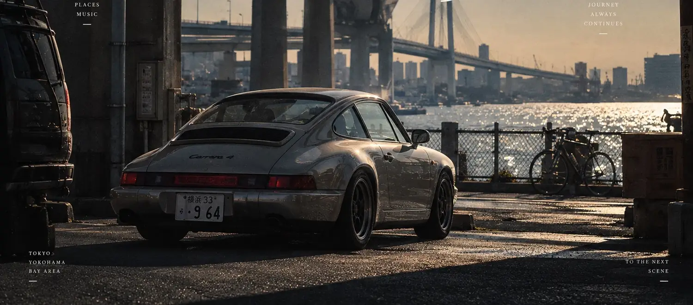

A CONTINUOUS EXPLORATION / EST. 2026
Driven by
Driven by
feeling.
Cars. Places. The moments in between.
A journal for those who
see a little differently.
THE CEDILLAA SMALL MARK.
AN ENTIRE POINT OF VIEW.
01 / THE JOURNALA SCENE WORTH KEEPING

JOURNAL NO. 00135°26′ N / 139°38′ E
YOKOHAMA, JAPAN
Somewhere
READ THE STORY↗
Somewhere
in Yokohama.
A VISUAL ESSAY
LIGHT, STILLNESS & THE CITY
LIGHT, STILLNESS & THE CITY
A quiet car beneath the expressway.
The last light against the
water.
An imagined scene, held like a memory.
SELECTED OBSERVATIONS002 — 004
Ways of
seeing.
Not everything needs a destination.
Some things simply ask us
to look closer.
02 / A POINT OF VIEWTHE TOHEŞAR PERSPECTIVE
Not just the car.
The world
around it.
A JOURNAL OF
THINGS THAT MOVE US.
THINGS THAT MOVE US.
TOHEŞAR moves between automobiles, cities, sound, time and memory. A visual archive of the scenes, objects and feelings we choose to keep.
TOHEŞAR(토헤샤)는 자동차와 도시, 사람과 음악, 그 사이에 남는 장면들을 기록하는 독립 비주얼 저널입니다.
03 / BEYOND THE PAGEFOLLOW YOUR CURIOSITY
There is
more to discover.
01 / FORMThe sculpture room.Se-diyu. A mark, given presence.↗
02 / EXPERIENCETOHEŞAR WORLDOur separate, immersive world.Step inside the scene.↗ 03 / ORIGINSBefore the journal.The people. The culture. The beginning.↗